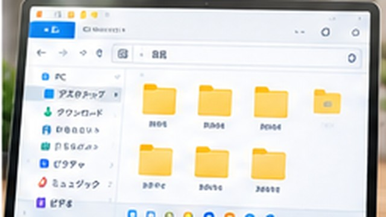
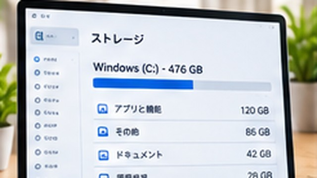

まとめ記事PC・Windows
Windows 11の使い方｜初心者が最初に覚えたい基本操作まとめ
Windows 11の基本操作について、初心者が迷いやすいポイントをまとめ、関連する個別手順へ案内します。
このテーマをまとめて見る →ワカルカモの記事をまとめて表示しています。
Windows 11の基本操作について、初心者が迷いやすいポイントをまとめ、関連する個別手順へ案内します。
このテーマをまとめて見る →Windows 11の設定について、初心者が迷いやすいポイントをまとめ、関連する個別手順へ案内します。
このテーマをまとめて見る →
Windows 11のファイル・フォルダについて、初心者が迷いやすいポイントをまとめ、関連する個別手順へ案内します。
このテーマをまとめて見る →
Windows 11のトラブル対処について、初心者が迷いやすいポイントをまとめ、関連する個別手順へ案内します。
このテーマをまとめて見る →
Windows 11のストレージ容量について、初心者が迷いやすいポイントをまとめ、関連する個別手順へ案内します。
このテーマをまとめて見る →記事公開時にXとThreadsへ完全自動投稿せず、コピペ用原稿とUTM付きURLだけをGitHub Actionsで生成する方法を解説します。
Search Consoleへsitemap.xmlを送信する手順と、成功・取得できませんでしたなどの表示を確認するポイントを解説します。
記事を公開するたびにSearch ConsoleのURL検査からインデックス登録をリクエストする必要があるのか、サイトマップとの使い分けを解説します。
Google Search Consoleから取得した所有権確認用HTMLファイルを、GitHub Pagesの正しい場所へ追加する方法を解説します。
GitHub Pagesで公開したサイトをGoogle Search Consoleへ追加し、検索状況を確認できるようにする流れを解説します。
Search Consoleを個人用Googleアカウントで登録したあと、サイト運営用アカウントでも管理できるようにする方法を解説します。
記事Markdownを追加するとGitHub ActionsがHTMLと記事一覧を生成する、静的ブログの自動化方法を基本構成から解説します。
GitHubで「Yowza, that’s a lot of files」と表示されたときの原因と、更新ファイルを分ける方法を解説します。
GitHub PagesのDeploy from a branchとGitHub Actionsの違いを整理し、静的サイトや自動生成サイトに合う公開方法を解説します。
GitHubへファイルを追加したのにGitHub Pagesへ反映されないとき、コミット・公開元・Actions・キャッシュを順番に確認する方法を解説します。
GitHubのリポジトリへHTMLファイルを置き、GitHub PagesでWebサイトを無料公開する基本手順を初心者向けに解説します。
XとThreadsへ同じ記事を投稿するとき、UTMパラメータでSNS別のアクセスをGA4へ記録し、流入を比較する方法を解説します。
個人ブログへGoogle Analytics 4を導入するとき、プライバシーポリシーで説明したい計測目的・Cookie・無効化方法を整理します。
Google Analytics 4でG-から始まる測定IDを確認する場所と、プロパティID・ストリームIDとの違いを解説します。
GitHub Pagesで公開した静的サイトへGoogle Analytics 4を設置し、アクセス計測を始める流れを初心者向けに解説します。
GitHubやGA4など、次に押す場所が分からないときにスクリーンショットを使ってChatGPTへ質問する方法と注意点を解説します。
ChatGPTと相談しながらデザイン、HTML、記事生成、GitHub Pages公開まで進めた実体験と、AIに任せやすい作業を紹介します。
テーマ決めから構成、事実確認、Markdown化、GitHub Pagesへの公開まで、ワカルカモで実際に使った流れを紹介します。